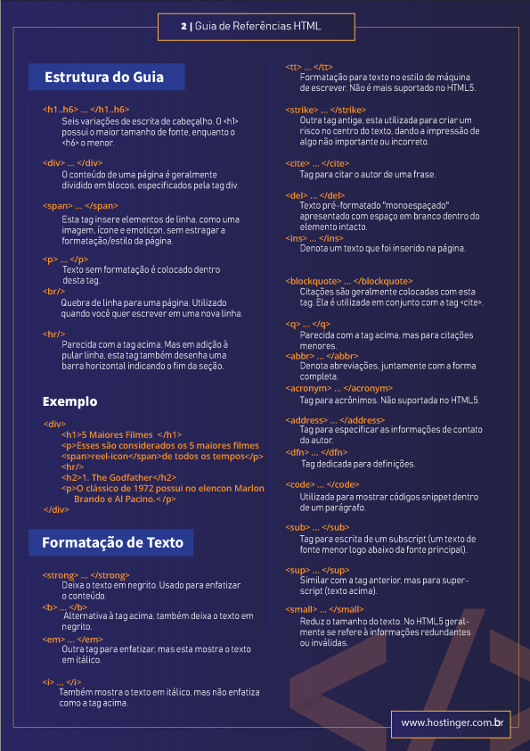
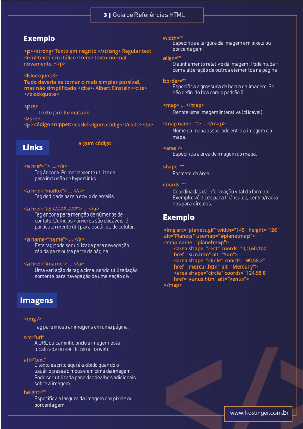

Imagine se você ganhasse 1 real para cada tag HTML que já tenha pesquisado no Google. Aposto que já estaria rico, não? Que tal, então, ter todas as tags organizadas em um Guia de Referências com Códigos HTML prontos (incluindo HTML5) para usar no seu site e economizar muito do seu tempo?
É exatamente isso que você vai encontrar neste tutorial. Abaixo, vamos listar todos os atributos para listas, formulários, formatação de texto e estruturação de documentos que você precisa para ter um site perfeitamente otimizado para os mecanismos de busca.
Acessar Site De HospedagemA Linguagem de Marcação de Hipertexto (HTML) é uma linguagem de marcação usada para criar sites. Ela utiliza tags HTML para estruturar páginas da web, permitindo que tenham cabeçalho, corpo, barra lateral e rodapé.
Tags HTML também são usadas para formatar texto, incorporar imagens ou atributos, criar listas e ligar arquivos externos. Essa última função permite que você modifique o visual da sua página ao incorporar arquivos CSS e outros objetos.
É importante usar as tags HTML adequadas, já que a estrutura incorreta pode quebrar a página da web. Pior do que isso, os motores de busca podem não serem capazes de ler a informação apresentada nas tags.
Como o HTML tem muitas tags, nós criamos um guia de referências com códigos prontos para usar com o objetivo de ajudar você a usar essa linguagem. Uma vez que você tiver baixado a folha de dicas do HTML, salve o arquivo nos seu dispositivos ou faça uma impressão. Dito isso, o guia de referências estará sempre pronto quando você precisar.
Ninguém gosta de passar trabalho procurando coisas na internet. Ainda mais se for para baixar arquivos separados sobre qualquer coisa. Neste caso, disponibilizados um arquivo completo em . pdf com todos os códigos HTML (e HTML5) que você pode usar para construir um site do zero ou otimizar a página de um site.
PDF de ExemploÉ importante utilizar o código correto para estruturar o documento HTML na criação de uma nova página. Uma estrutura incorreta pode quebrar a página e até impedir que os mecanismos de busca consigam acessar seu conteúdo.
Da mesma forma, a formatação correta do texto também é importante para manter a boa aparência.
Abaixo vamos mostrar alguns códigos de HTML certos para cuidar da estrutura da página e da formatação do texto.

Talvez você queira linkar as páginas internamente dentro do site ou criar um link que leva a um número ou email clicável. É importante usar a tag correta para certificar que o link vai direcionar para o local correto. Da mesma forma que utilizar uma imagem externa ou incorporar uma com o texto ALT correto é crucial para que seja mostrada corretamente.
Veja os códigos HTML prontos para sites para formatar imagens, abaixo.
